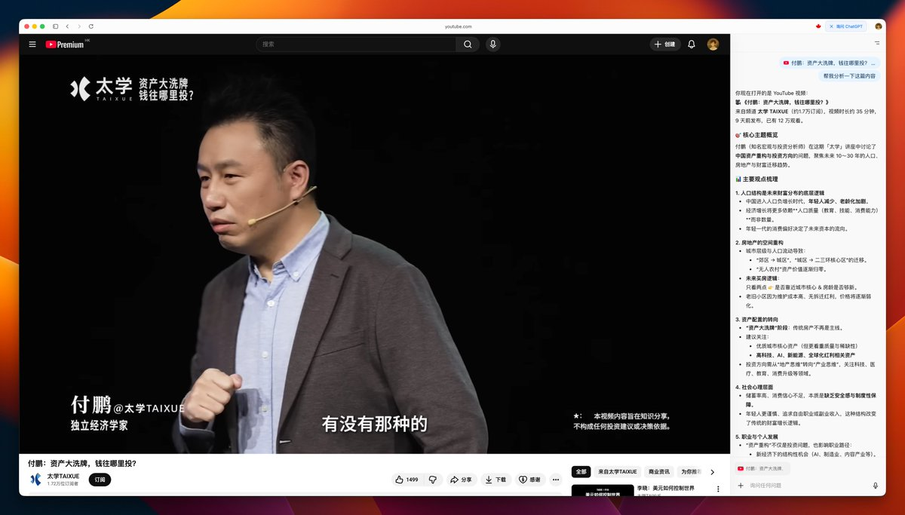

洛铃
@LolingVerse
但是洛铃会想要房子，洛铃想要一个窝……

Tw93
@HiTw93
付鹏这个「资产大洗牌，钱往哪里投」的 Youtube 视频非常值得一看，讲清楚了不少当前国内的实际情况，比如说经济增长将更多依赖人口质量（教育、技能、消费能力）而非数量，未来买房逻辑只看两点是否靠近城市核心 & 房龄是否够新等等观念，以及未来如何更好的投资。
https://t.co/MZRF1LckbL https://t.co/m2M61fwCv7